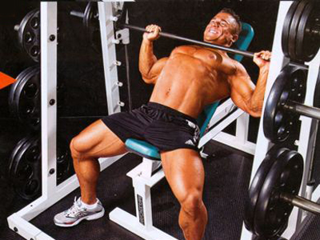

Жим в Смите лежа
Жим в Смите лежа – это базовое упражнение, являющееся аналогом классического жима лежа, его действие направлено на развитие грудной мышцы. Техника выполнения аналогична работе со свободным отягощением
Однако, благодаря тому что выполнение упражнения происходит по строго заданной амплитуде направляющих, движение получается более акцентированным и предоставляет возможность на 100% проработать мышечные волокна груди.
Преимущества выполнения жима лежа в Смите- Тренажер позволяет выполнять упражнение без страховочного партнера.
- Использование предельных весов без возможности травмироваться.
- В тренажере Смита можно выполнять тяжелые негативные повторения без нарушения техники и вреда для связок и суставов.
- Благодаря тому что штанга движется по направляющим, начинающим атлетам предоставляется прекрасная возможность отработать правильную технику выполнения классического жима лежа.
- Атлеты, получившие травму, могут продолжать тренироваться, не нагружая дополнительно травмированные связки и суставы, целенаправленно прорабатывая только необходимую мышечную группу.
- Тренажер Смита предоставляет возможность накачать прекрасную грудь и развить абсолютную силу атлета без дополнительного риска получения травмы.
Как правильно выполнять:
- Первым делом необходимо отрегулировать расположение скамьи под тренажером. Используйте небольшой угол наклона, который должен быть в пределах от 20 до 30 градусов. Это нужно, чтобы более качественно акцентировать нагрузку на отстающий верх груди и разгрузить работу трицепса и дельт.
- Скамью под тренажером нужно выставить так, чтобы при опускании грифа в конечную точку негативной фазы он касался непосредственно нижней части грудной клетки.
- Примите стартовое положение и снимите штангу с фиксаторов тренажера. Ноги держите расслабленными: это нужно, чтобы не сместить нагрузку с груди на вспомогательные мышечные группы.
- Спина должна касаться скамьи всей плоскостью, не используйте дополнительные прогибы, лопатки держите в сведенном положении до конца выполнения упражнения.
- Ширину хвата подберите так, чтобы при опускании штанги в нижнюю точку предплечья были параллельны под углом в 90 градусов. Такое положение рук обеспечит правильную передачу нагрузки работающей мышечной группе во время выполнения упражнения.
- Кисти держите в строго зафиксированном положении и не сгибайте их, в противном случае вы можете получить травму.
- Сделайте глубокий вдох и плавно выполните негативную фазу движения. Когда гриф коснется нижнего среза груди, сделайте двухсекундную паузу, чтобы максимально растянуть мышечные волокна.
- Не отрывайте голову от скамьи, чтобы предотвратить травму и максимально сфокусироваться на проработке грудной мышцы.
- Резко выдохните и верните подконтрольным движением штангу в исходное положение. Используйте вышеописанную технику, выполните заданное количество сетов и повторений.